- Review:
- General reminders
- First Assignment
- Bivariate Data Visualization
- Continuous v Continuous variables
- Continuous v Categorical variables
- Additional tips
- Next class
William R. Buchanan, Ph.D.
Strategic Data Fellow at MDE/Adjunct Prof at JSU
> and + prompts from what you copy and paste# symbol before that textLoad the example data set that will be used tonight
# Load the packages needed for the graphs and to read the data
library("foreign"); library("ggplot2");
# Read the example data set from my server
johnDoe <- as.data.frame(read.dta( # Don't put the URL on this line
"http://www.paces-consulting.org/stata/JSU/Fall2014/JohnDoe-task1.dta"))
# Compare this and the next graph
qplot(race, data = johnDoe)
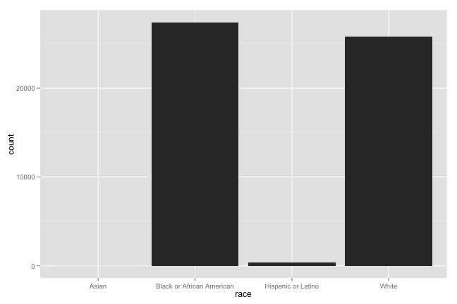
qplot(race, data = johnDoe, geom = "histogram", na.rm = TRUE, binwidth = 10,
ylab = "# of Students per Score", main = "Middle of Year ELA : \nBinwidth set to 10",
xlab = "Middle of Year \nEnglish/Language Arts Scores")
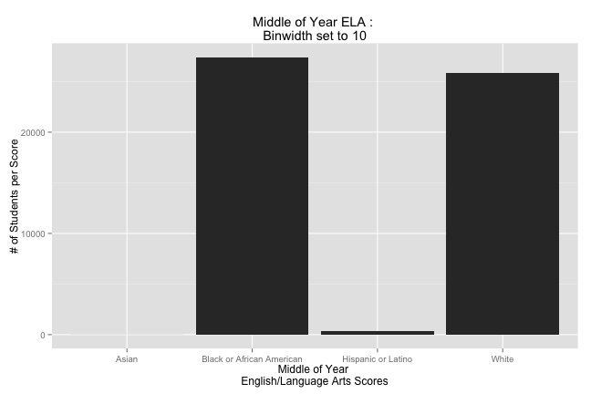
# Look at this graph and compare the interpretations on the next slide
qplot(female, data = johnDoe)
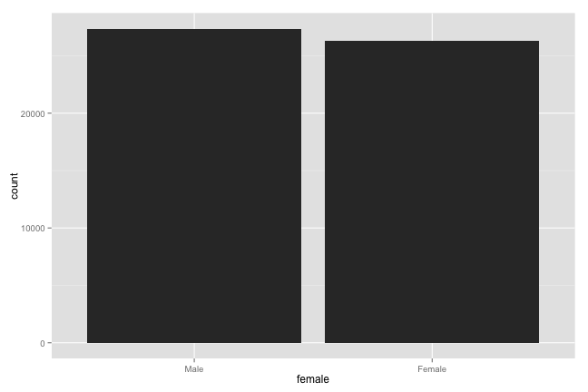
# This shows you the labels for the variables in the dataset
attr(johnDoe, "var.labels")
## [1] "District ID #"
## [2] "Non-Unique School ID #"
## [3] "Unique School ID #"
## [4] "MSIS Student ID #"
## [5] "Student's Ethnoracial Identity"
## [6] "Student's Biological Sex"
## [7] "Severe Cognitive Disability Indicator"
## [8] "Student Served by Special Education Indicator"
## [9] "English Language Learner Indicator"
## [10] "Limited English Proficiency Indicator"
## [11] "Migrant Family Indicator"
## [12] "Economically Disadvantaged Indicator"
## [13] "Current Grade Level of the Student"
## [14] "Current Reading/Language Arts Scaled Score"
## [15] "Prior Reading/Language Arts Scaled Score"
## [16] "Current Mathematics Scaled Score"
## [17] "Prior Mathematics Scaled Score"
## [18] "Current Reading/Language Arts Proficiency Level"
## [19] "Prior Reading/Language Arts Proficiency Level"
## [20] "Current Mathematics Proficiency Level"
## [21] "Prior Mathematics Proficiency Level"
## [22] "Participated in Reading/Language Arts Intervention"
## [23] "Participated in Mathematics Intervention"
# A first example of a scatterplot
qplot(pgrrlascore, cgrrlascore, data = johnDoe)
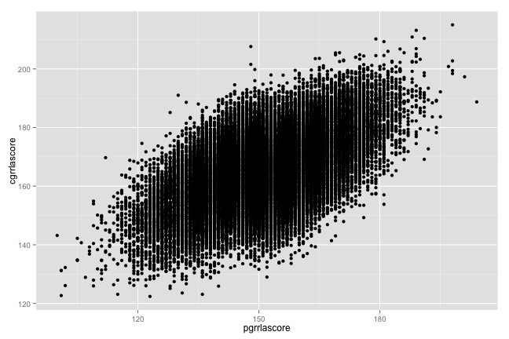
# Add a label to the x-axis for the variable you graph on the x-axis
qplot(pgrrlascore, cgrrlascore, data = johnDoe, #
xlab = attributes(johnDoe)$var.labels[[15]])
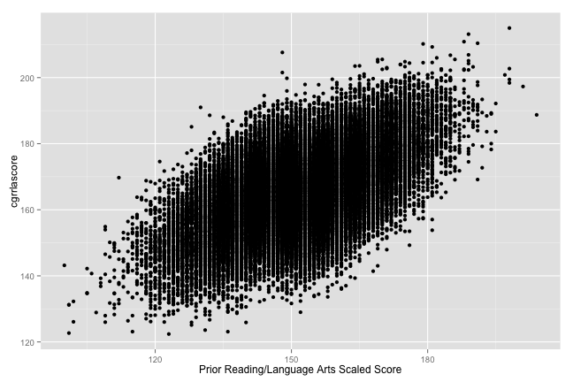
# Add labels to both axes for your graph
qplot(pgrrlascore, cgrrlascore, data = johnDoe, #
xlab = attributes(johnDoe)$var.labels[[15]], #
ylab = attributes(johnDoe)$var.labels[[14]])
attributes(johnDoe)$var.labels[[#]] thing can be confusingnames(johnDoe) function you can find the number that corresponds to your variable# Add labels to both axes for your graph
qplot(pgrrlascore, cgrrlascore, data = johnDoe, #
xlab = "Prior RLA Score", ylab = "Current RLA Score")
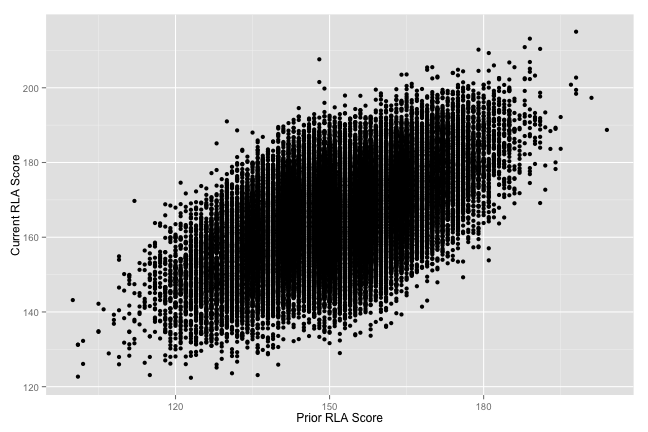
# Since there are a lot of points, we could make them semi-transparent
# to view them a bit more easily
qplot(pgrrlascore, cgrrlascore, data = johnDoe, #
xlab = "Prior RLA Score", ylab = "Current RLA Score", #
alpha = I(0.15))
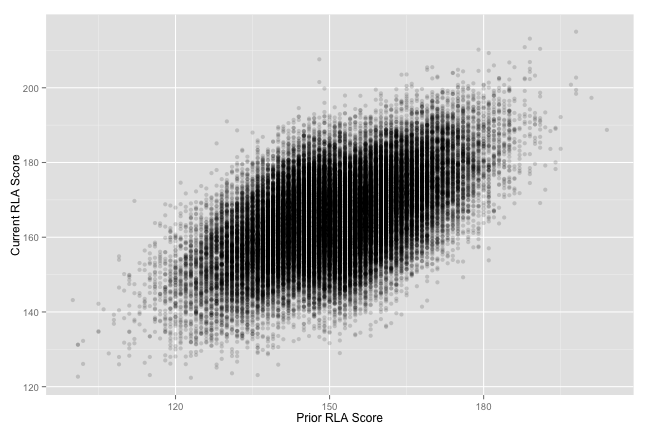
# And if we want to highlight the trend in the data, we can add a line of best fit
qplot(pgrrlascore, cgrrlascore, data = johnDoe, #
xlab = "Prior RLA Score", ylab = "Current RLA Score", alpha = I(0.15)) + #
geom_smooth(size = 2, method = "lm")
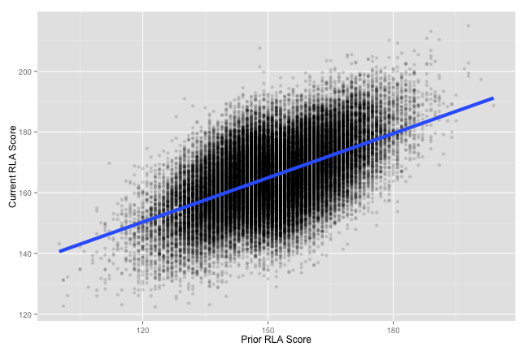
# Or we could add a line that can bend and curve to fit the data a bit more
qplot(pgrrlascore, cgrrlascore, data = johnDoe, #
xlab = "Prior RLA Score", ylab = "Current RLA Score", alpha = I(0.15)) + #
geom_smooth(size = 2)
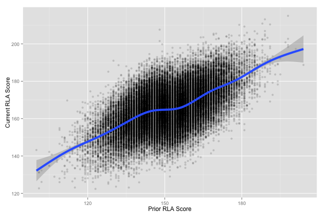
# Or we could add both types of lines
qplot(pgrrlascore, cgrrlascore, data = johnDoe, #
xlab = "Prior RLA Score", ylab = "Current RLA Score", alpha = I(0.15)) + #
geom_smooth(size = 2) + geom_smooth(size = 2, method = "lm", color = "Red")
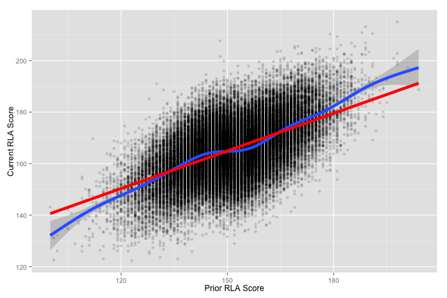
# If this is our final graph, then we probably want to give it a title as well
qplot(pgrrlascore, cgrrlascore, data = johnDoe, #
xlab = "Prior RLA Score", ylab = "Current RLA Score", #
main = "Relationship between RLA Scores across two years", alpha = I(0.15)) + #
geom_smooth(size = 2) + geom_smooth(size = 2, method = "lm", color = "Red")
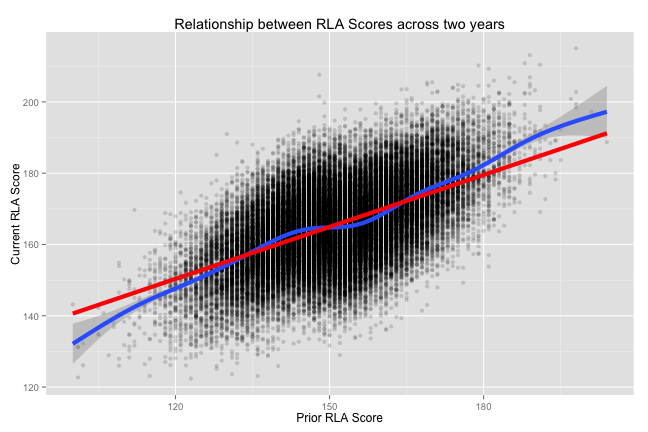
# Create a boxplot to look for outliers across districts
ggplot(johnDoe, aes(x = factor(distid), y = cgrmthscore)) + geom_boxplot()
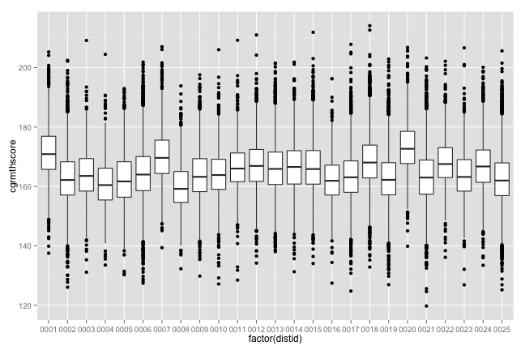
# Same thing but this time looking at grade-levels within districts
ggplot(johnDoe, aes(x = factor(grade), y = pgrmthscore)) + #
geom_boxplot(aes(fill = factor(grade))) + facet_wrap(~distid)
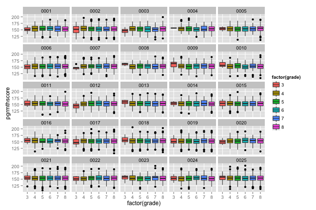
# What if we want more detail about the distributions in each of the categories?
ggplot(johnDoe, aes(x = cgrmthlev, y = pgrmthscore)) + #
geom_jitter(alpha = I(.1)) + geom_boxplot(aes(fill = cgrmthlev)) + #
facet_wrap(~grade)
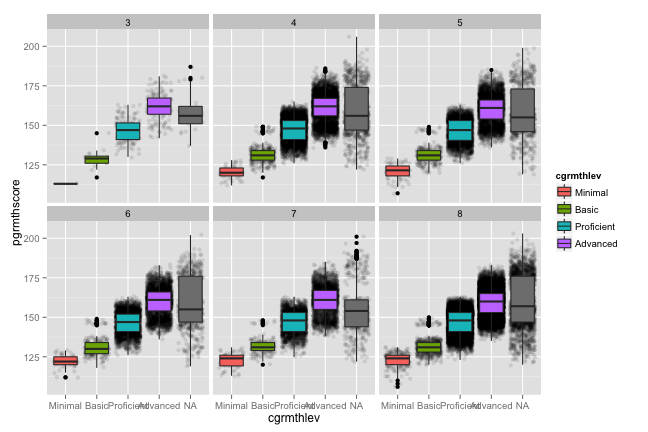
# It works for simpler examples as well
ggplot(johnDoe, aes(x = factor(grade), y = pgrmthscore)) + #
geom_jitter(alpha = I(.1)) + geom_boxplot(aes(fill = factor(grade)))
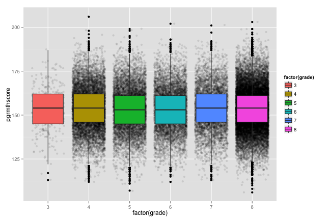
class(dataObject$variableName) to determine whether or not the variable you are interested in using on the x-axis is a factor variable
factor() function like the example above with grade level on the x-axis# Get a sample of 500 students from the data object
sampleData <- johnDoe[sample(nrow(johnDoe), 500), ]
# Look at a sumamry of the data just to confirm it's only 500 students
summary(sampleData[, 5])
## Asian Black or African American
## 0 257
## Hispanic or Latino Two or More Races
## 6 0
## American Indian or Alaskan Native Native Hawaiian or Pacific Islander
## 0 0
## White
## 237
# Recreate the last boxplot
ggplot(sampleData, aes(x = cgrmthlev, y = pgrmthscore)) + #
geom_jitter(alpha = I(.1)) + geom_boxplot(aes(fill = cgrmthlev)) + #
facet_wrap(~grade)
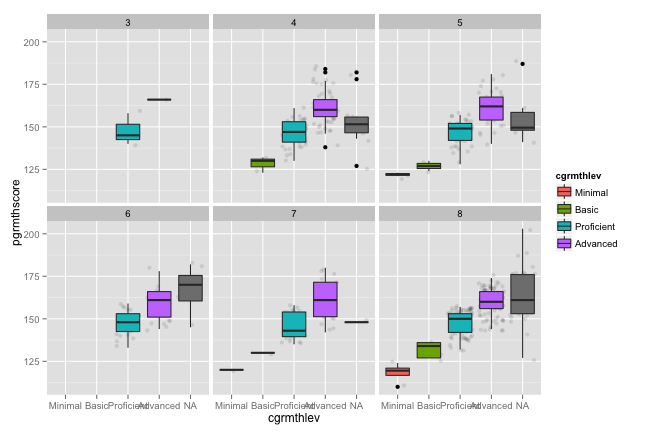
# If this is our final graph, then we probably want to give it a title as well
qplot(pgrrlascore, cgrrlascore, data = sampleData, #
xlab = "Prior RLA Score", ylab = "Current RLA Score", alpha = I(0.5), #
main = "Relationship between RLA Scores across two years") + #
geom_smooth(size = 2) + geom_smooth(size = 2, method = "lm", color = "Red")
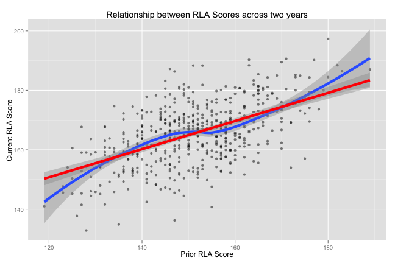